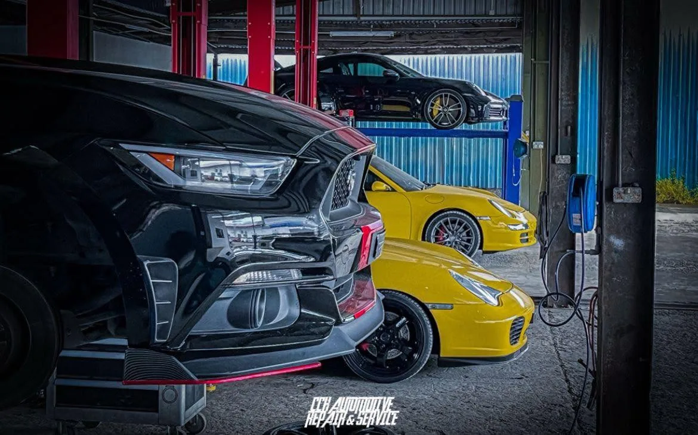
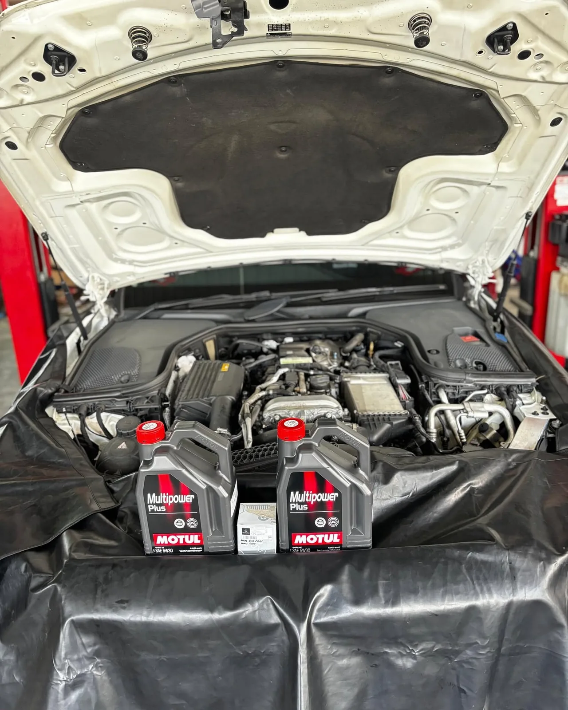
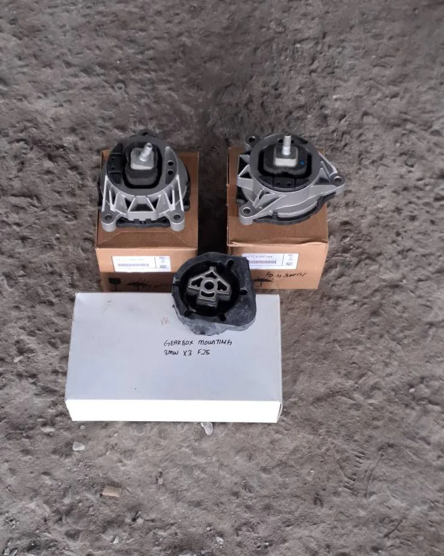
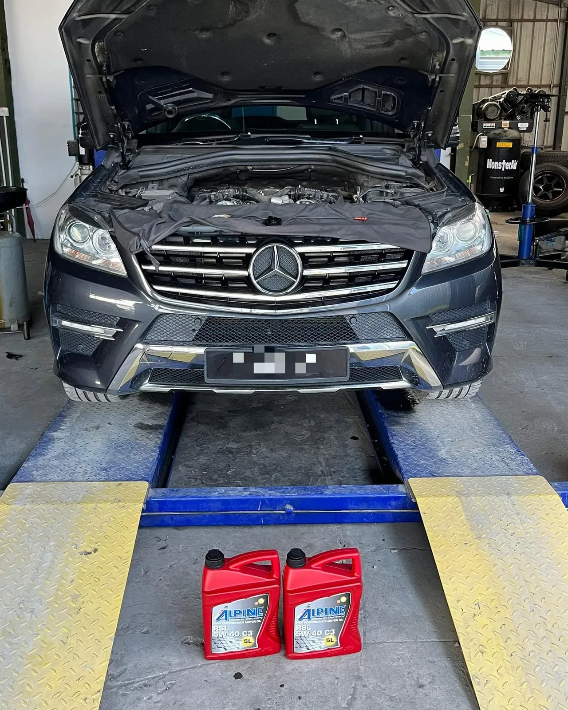
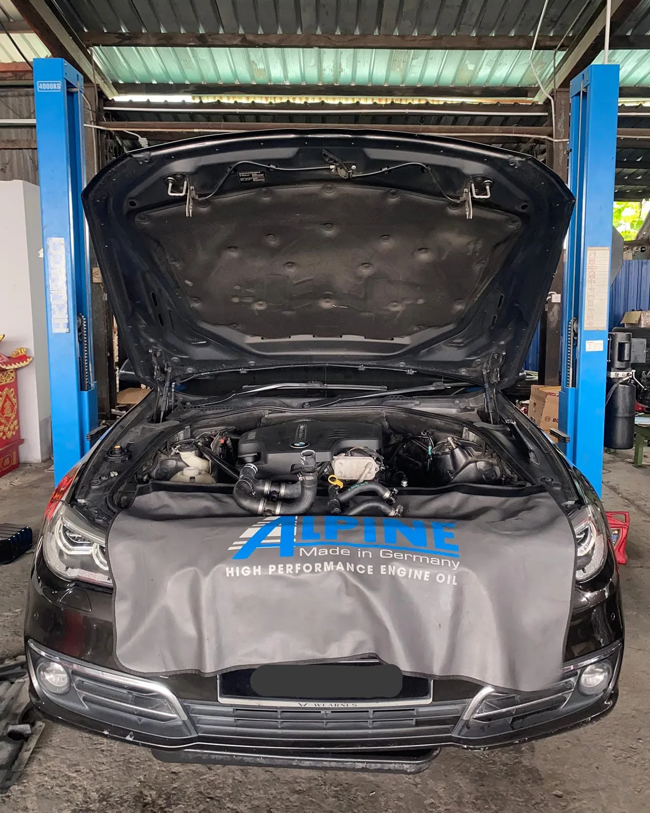
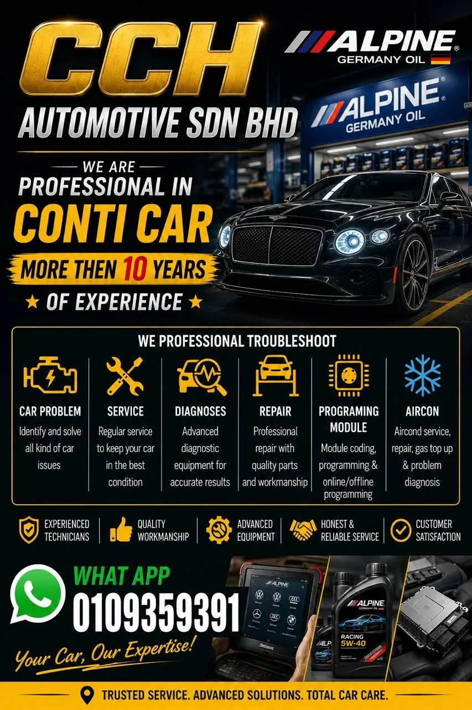
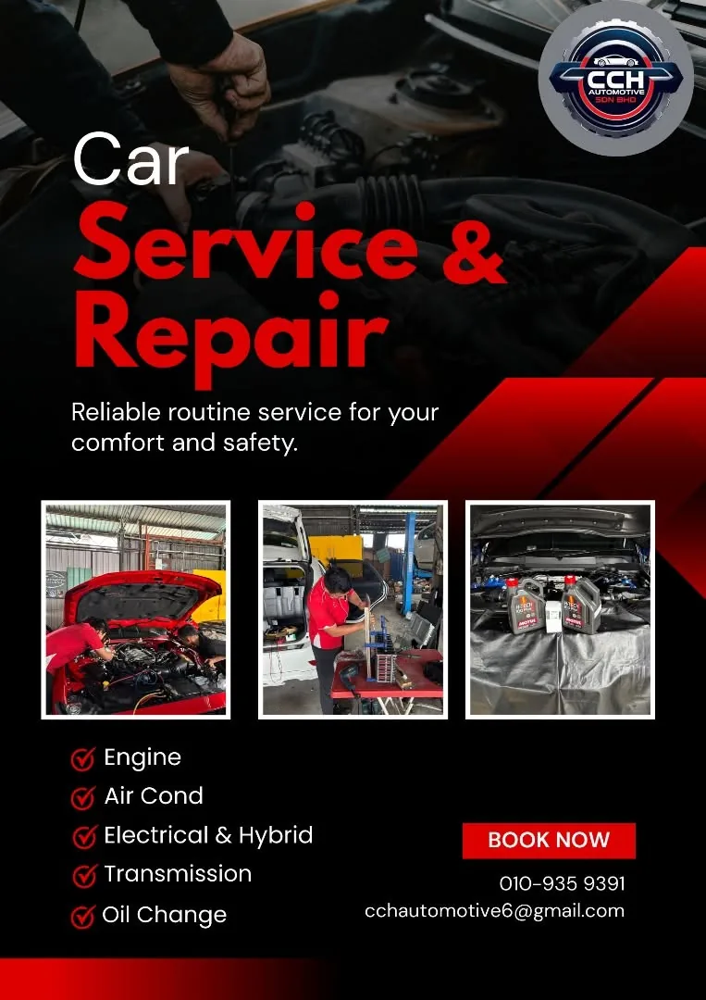
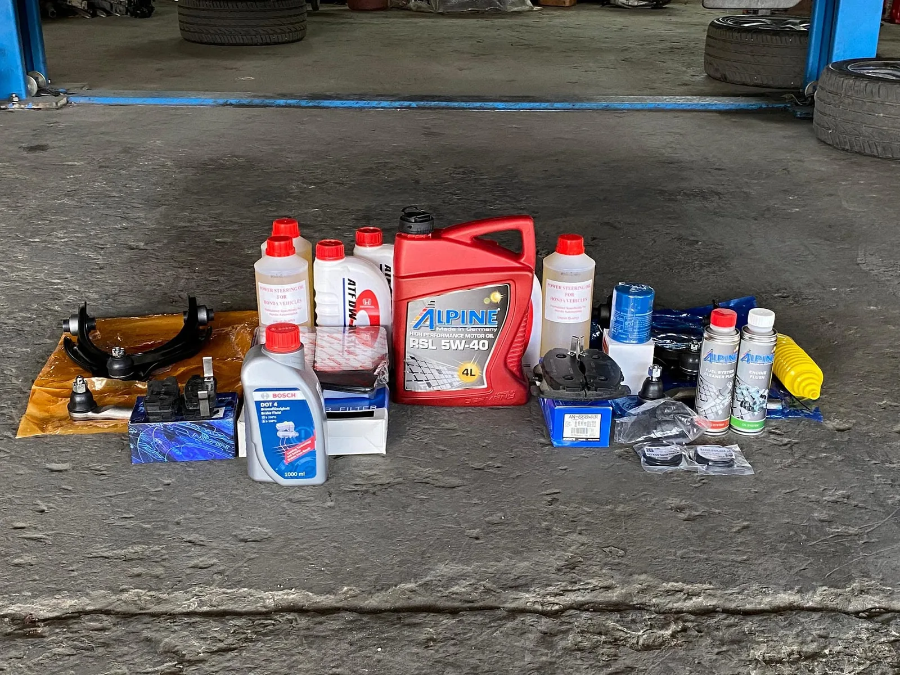

Professional in Conti CarBengkel kereta Continental di Kota Kinabalu
Baik pulih Mercedes, BMW, Audi dan VW di Jalan Tuaran, Likas.
Apa yang kami baiki di bengkel Likas
Leret untuk lihat kerja yang kami terima. Tekan kad untuk butiran.

Troubleshooting keretaLampu amaran, bunyi pelik dan masalah yang kadang-kadang muncul.
Baik pulih enjin dan gearboxMasalah enjin, kerja gearbox dan transmisi, mounting.
Diagnostik komputerMembaca sistem kereta untuk cari apa yang sebenarnya rosak.
Pengaturcaraan dan coding modulProgram modul dan coding ciri pada kereta Eropah. Servis dan penyelenggaraan keretaTukar minyak dengan minyak Alpine Germany, penapis dan cecair.
Servis dan penyelenggaraan keretaTukar minyak dengan minyak Alpine Germany, penapis dan cecair.
Servis dan baiki aircondAircond tak sejuk? Servis, baiki dan kerja cooling coil.
Elektrik dan hibridMasalah elektrik dan kereta hibrid, seperti yang tersenarai pada flyer kami.Lebih 10 tahun menjaga kereta Continental
CCH Automotive Sdn Bhd ialah bengkel kereta di Likas Baharu, Jalan Tuaran, Kota Kinabalu, di kawasan Jalan Tuaran Bypass. Kami menjaga kereta Continental: Mercedes-Benz, BMW, Audi dan Volkswagen, serta jenama lain yang dibawa pemandu Sabah.
Bengkel ini mempunyai pengalaman lebih 10 tahun. Bawalah kereta anda jika lampu amaran menyala, gearbox terasa pelik, aircond tidak lagi sejuk atau kereta sudah tiba masa servis. Kami mulakan dengan troubleshooting dan diagnostik komputer, kemudian baru baiki.
Jenama Continental yang kami jaga
- Mercedes-Benz
- BMW
- Audi
- Volkswagen
Dari WhatsApp anda ke lif dan balik semula
1WhatsApp kami
Hantar model, tahun dan apa yang kereta anda buat ke 010-935 9391.
2Diagnos dan coding
Troubleshooting dan diagnostik komputer mencari puncanya. Modul diprogram atau dikod jika kerja itu memerlukannya.
3Baiki
Kerja enjin, gearbox, aircond, elektrik atau servis dibuat di bengkel kami di Likas.
4Ambil kereta
Bawa pulang kereta anda dari Jalan Tuaran.
Kereta yang pernah kami kerjakan
Kerja sebenar dari bengkel kami. Tahan atau leret untuk hentikan jalur, tekan gambar untuk lihat penuh.
Juga dari hantaran Facebook kami
- BMW F30 M Sport (aktifkan stereng dan paddle shifter)
- Audi R8 V8 (tukar minyak)
- Mercedes C200 Kompressor
- Porsche Carrera Turbo S
- Range Rover Sport
- Mustang GT 5.0 (cooling coil)
- Toyota Hilux (naik taraf brek)
- Mini
- Toyota Alphard / Vellfire
- Honda Accord
- Toyota FJ Cruiser
- Subaru

Minyak enjin Alpine Germany
Kami guna minyak enjin Alpine Germany. Hantaran kami ada menyebut Alpine RS 10W-60, dan gred dalam gambar bengkel kami termasuk Alpine RS 0W-40, RS 5W-40 C3, Longlife 12 FE 0W-30, Longlife III 5W-30, TSN 10W-40, RSL 5W-40 dan Alpine DSG Fluid.
Soalan yang pemandu tanya kami
Kereta apa yang anda kerjakan?
Kami bengkel kereta Continental untuk Mercedes-Benz, BMW, Audi dan Volkswagen. Hantaran kami juga menunjukkan kerja pada BMW F30 M Sport, Audi R8 V8, Mercedes C200 Kompressor, Porsche Carrera Turbo S, Range Rover Sport, Mustang GT 5.0, Toyota Hilux, Mini, Toyota Alphard / Vellfire, Honda Accord, Toyota FJ Cruiser dan Subaru.
Di mana CCH Automotive?
Lot 5, Batu 5½, Jalan Tuaran, Likas Baharu, 88450 Kota Kinabalu, Sabah, di kawasan Jalan Tuaran Bypass. Pautan Google Maps di halaman ini mencari alamat tersebut.
Apakah waktu operasi anda?
Waktu operasi kami belum disenaraikan dalam talian. WhatsApp 010-935 9391 untuk tetapkan masa sebelum anda datang.
Boleh program atau coding modul?
Boleh. Pengaturcaraan dan coding modul ialah salah satu perkhidmatan kami. Satu contoh dari hantaran kami ialah BMW F30 M Sport yang kami aktifkan stereng M Sport dan paddle shifter.
Minyak enjin apa yang anda guna?
Kami guna minyak enjin Alpine Germany, contohnya Alpine RS 10W-60, Alpine RS 5W-40 C3 dan Alpine Longlife III 5W-30.
Bagaimana nak dapatkan harga baik pulih?
Hantar model, tahun dan apa yang kereta anda buat melalui WhatsApp. Gambar atau video pendek masalah itu membantu kami membalas dengan betul.
Cari kami di Jalan Tuaran
Lot 5, Batu 5½, Jalan Tuaran, Likas Baharu, 88450 Kota Kinabalu, Sabah. Waktu operasi belum disenaraikan dalam talian, jadi WhatsApp kami untuk tetapkan masa sebelum anda datang.